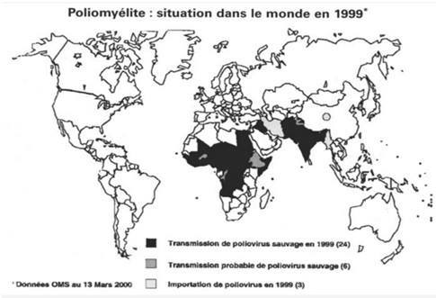

POLIOVIRUS
I) Description
1-Hôte
Appartenant à la classe des entérovirus, il est responsable de la poliomyélite qui est une maladie infectieuse aiguë spécifique de l'homme. Ce dernier est le seul réservoir connu pour ce virus.
2-Organes cibles
La poliomyélite est en effet une myélite de la substance grise, plus précisément de la corne antérieure de la moelle.
La symptomatologie est découpée en plusieurs phases. Premièrement digestive : le virus, inhalé ou plus souvent ingéré, se multiplie dans
la muqueuse pharyngée et intestinale, de sorte qu'il soit présent dans la gorge et dans les selles.
Deuxièmement une phase de croissance et division dans les formations lymphatiques : amygdales, ganglions cervicaux profonds (gorge), les plaques de
Peyer ainsi que les ganglions mésentériques (pour le tube digestif).
Enfin, une phase de virémie avec quelques fois atteinte du système nerveux central.
3-Symptômes
Il y a donc une longue incubation silencieuse (2 semaines) parfois marquée par la succession de deux séries de signes :
une angine et une diarrhée, toutes deux discrètes, puis une semaine plus tard, un malaise général fébrile durant trois jours.
Ensuite,les paralysies apparaissent au cours d'un syndrome infectieux fait de fièvre et de douleurs diffuses.
Parfois précédées de rétention d'urine et d'un syndrome méningé : céphalée et raideur de la nuque. Ce sont des paralysies brutales,
périphériques, asymétriques.
Dans les cas les plus graves on a une paralysie flasque asymétrique des jambes.
La régression des paralysies commence au bout de deux semaines.
Elle est très lente, pouvant s'étaler sur deux ans, et incomplète : les séquelles sous forme de paralysies sont le principal problème de la
poliomyélite.
Une aggravation des séquelles est possible : c'est le syndrome post-poliomyélitique.
La fièvre, l'asthénie, les céphalées, les vomissements, la raideur de la nuque et les douleurs dans les membres en sont les premiers symptômes.
Une paralysie irréversible (des jambes en général) survient dans un cas sur 200.
Entre 5 et 10% des malades paralysés décèdent lorsque leurs muscles respiratoires cessent de fonctionner.
4-Vecteur
La transmission se fait par l'intermédiaire d'eau souillée, par les selles ou par des aliments contaminés. C'est une maladie des mains sales et du péril fécal très contagieuse. Les collectivités d'enfants sont les plus touchées.
II) Distribution spatiale
1-Epidémiologie
Avant l'ère vaccinale, la polyomyélite était l'un des plus terribles fléaux de l'enfance.
La poliomyélite touchait plus de 600 000 enfants par an dans le monde.
Elimination: ETATS UNIS-1994 PACIFIQUE OCCIDENTAL-2000 EUROPE-2002.
En France le dernier cas autochtone remonte à 1989 et le dernier cas rapporté à 1995.
L'obligation vaccinale a été instauré en 1964.
2-Recommandations OMS
Pour vaincre la maladie grâce à la vaccination, un effort a été décidé
au niveau mondial en 1988 :
l'Initiative Mondiale pour l'Eradication de la Poliomyélite a ainsi été lancée par l'OMS,
le dernier objectif en date correpond à l'année 2015.
Mise en place d'une couverture vaccinale de routine élevée chez le nourrisson.
Des doses supplémentaires de vaccin antipoliomyélitique oral sont administrées à tous les
enfants de moins de 5 ans au cours des journées nationales de vaccination.
Le nombre des cas de poliomyélite a diminué de plus de 99% depuis 1988, passant de 350 000 à 359 cas notifiés en 2014.
Cette baisse résulte de l'effort mondial pour éradiquer cette maladie. Il ne reste plus que 2 pays d'endémie (Afghanistan et Pakistan), alors
qu'ils étaient plus de 125 en 1988. A la suite de l'émergence de nouveau foyer épidémique lié à des souches dérivés du poliovirus vaccinal
l'OMS recommande la plus grande prudence.